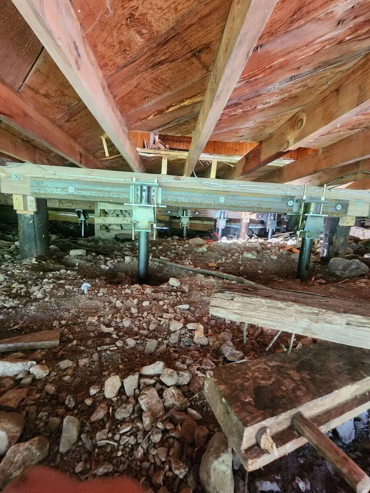
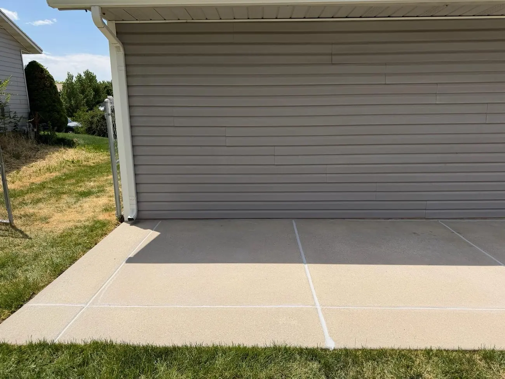
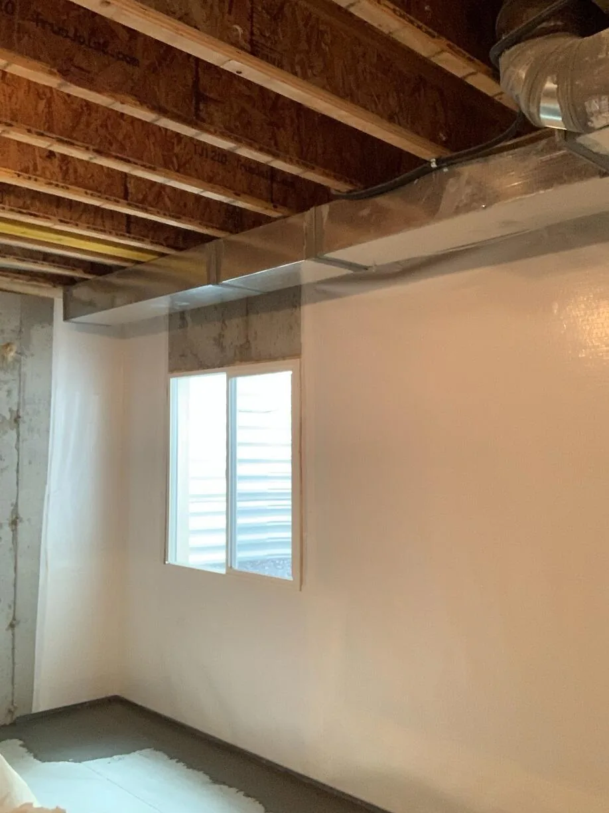
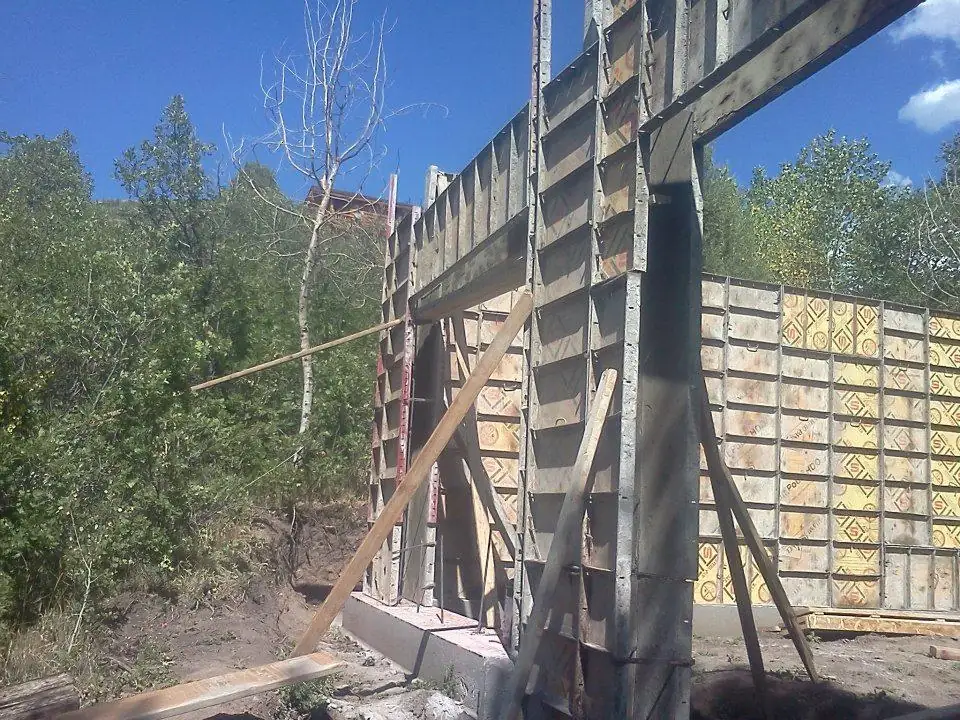
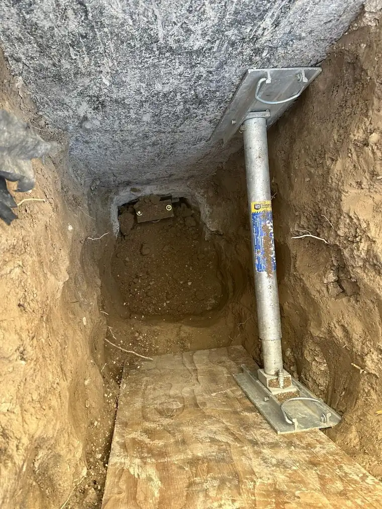
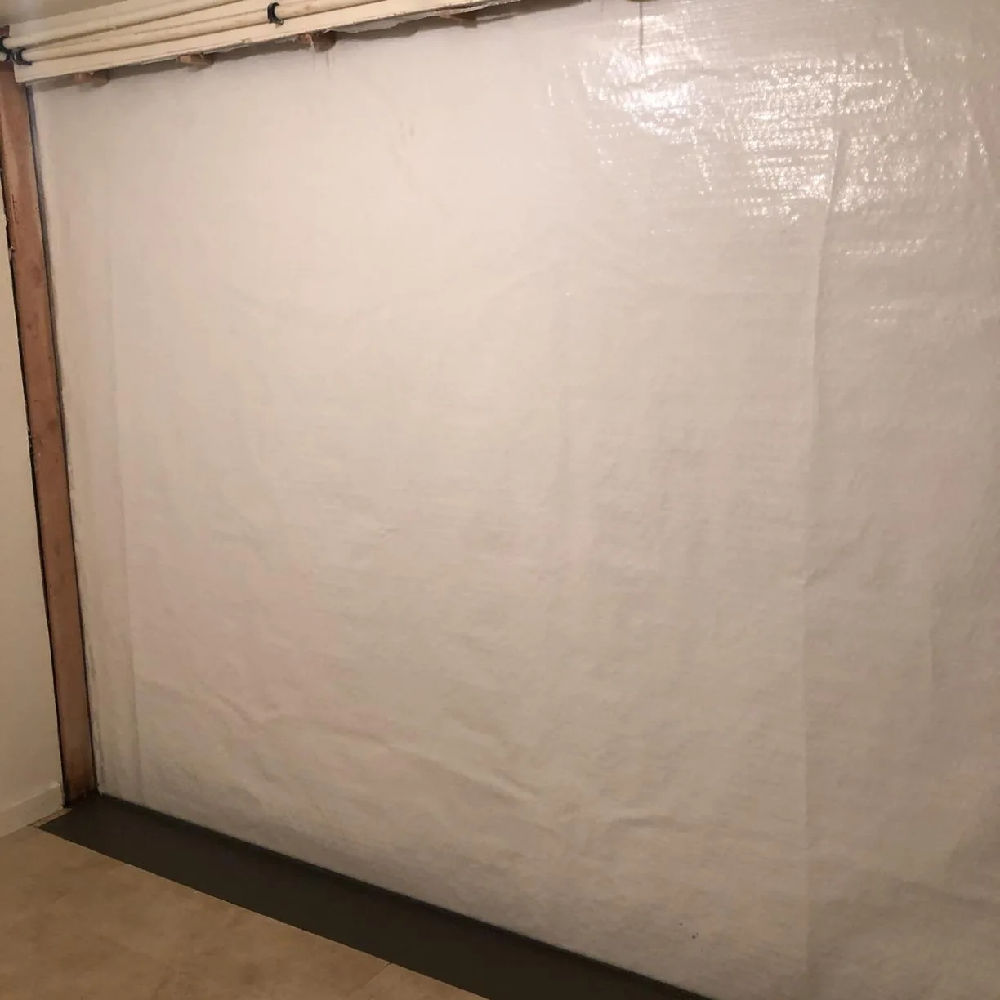
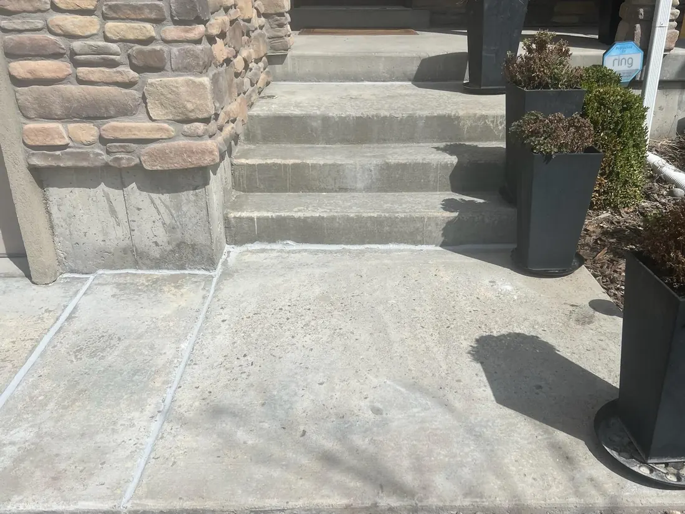

West Jordan, Utah · locally owned · 30 years
Foundation repair in West Jordan, fixed from the ground down.
Davenport Foundation Repair handles foundation repair in West Jordan and across Utah: stabilizing settling and bowing foundations, waterproofing basements, repairing crawl spaces, and lifting and sealing concrete. Start with a free home inspection and a written estimate.
SECTION A–A · TYPICAL UTAH HOME · TAP A NUMBER
Our services
Seven ways we fix what’s underneath.
There’s no one-size-fits-all fix. Each repair is matched to the cause: soil, water, pressure or settlement.
From the job file
Real jobs, real Utah towns.
Photos from our crews’ own jobs, captioned the way they filed them.












Why it lasts
Engineered steel, installed by our own crews.
As a certified Foundation Supportworks dealer, we install professionally engineered piers, anchors and wall systems, with ongoing training and written warranties. As a Basement Systems dealer, our waterproofing and sump systems come from the same network of specialists.
- Tested and patented foundation products
- Professionally trained technicians
- Written warranties
- A free inspection and written estimate

Customer reviews
In their words.
“Chase and his crew were excellent and we were very satisfied with their attention to detail.”
“so far the products are working great and everyone has been a pleasure to work with.”
“Very friendly and helpful”
Questions
Foundation questions, answered.
01What are the signs of a foundation problem?
Uneven, sagging or cracked floors; cracks in drywall or foundation walls; chimneys pulling away from the house; bowing or leaning basement walls; and doors or windows that start to stick.
02Is it better to fix foundation cracks early?
Yes. A crack is a symptom. Finding the cause while the movement is small usually means a simpler, less disruptive repair than waiting until walls bow or floors drop further.
03How do you fix a crack in a basement wall?
It depends on the cause. Settling is stopped with piers under the footing; inward pressure is handled with wall anchors or wall reinforcement; and leaking cracks are sealed and paired with drainage. The inspection tells us which.
04Do you charge for an inspection?
No. We offer a free home inspection and a no-obligation, written cost estimate.
05What areas do you serve?
We are based in West Jordan and work throughout Utah, including Salt Lake City, West Valley City, Provo, Orem, Ogden, Sandy, South Jordan, Lehi, Layton and nearby cities.
Free inspection
Find out what’s happening below grade.
A free inspection and a written estimate. We look at the whole house, explain the cause, and show you the options.